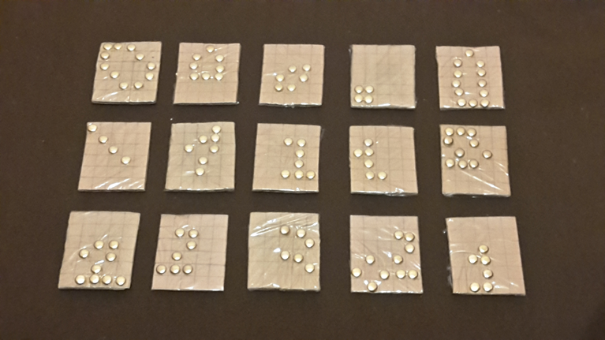
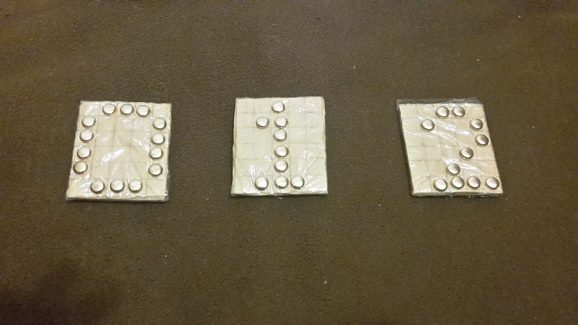
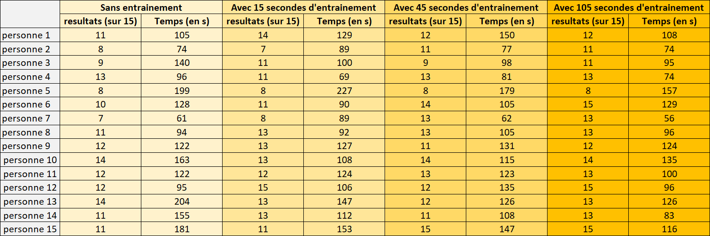
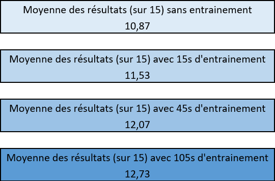
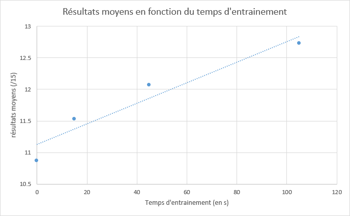
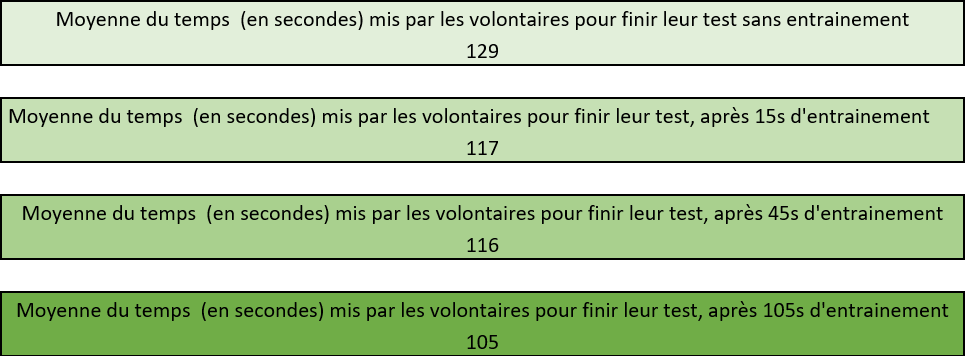
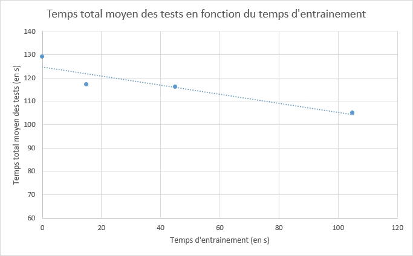

Sommaire
Expérience de braille
Introduction
Quelle est notre expérience permettant de vérifier notre hypothèse ?
Quel est le matériel utilisé ?
Comment se déroule notre expérience ?
Quels sont les résultats de notre expérience ?
Que pouvons-nous déduire de ces résultats ?
Que pouvons-nous conclure de notre expérience?
Quelle est la fiabilité de notre expérience ?
Réseau de neurone artificiel
Notre modélisation du réseau de neurones
Testez le réseau!
Applications des réseaux de neurones artificiels dans la vie réelle
Expérience de braille
Introduction
Nous savons d'après la partie théorie que le fonctionnement du réseau de neurones artificiels se rapproche fortement de
celui du réseau de neurones biologiques. En effet, comme nous l’avons exprimé initialement, les réseaux de
neurones artificiels ne sont qu’une modélisation mathématique du réseau de neurones biologiques.
Il s’agira alors de voir comment le réseau de neurones biologiques parvient à différencier trois situations
avec le moins d’erreurs possible. Cela nous permettra par la suite d’appliquer cette méthode à notre réseau
de neurones artificiels, afin qu’il puisse à son tour reconnaître trois situations avec le moins d’erreurs
possible, tout en s’inspirant du réseau de neurones biologiques.
Dans notre TPE, les situations que devrons reconnaitre les réseaux de neurones biologiques et artificiels
avec le moins d’erreurs possible sont les chiffres 0, 1 et 2.
Avant de concevoir une expérience permettant de répondre à notre questionnement, nous avons émis une
hypothèse permettant d’expliquer comment le réseau de neurones biologiques parvient à limiter ces erreurs.
Comme nous l’avons abordé précédemment, le cerveau humain est doté d’une certaine plasticité, qui lui
permet de renforcer des connexions du cerveau lorsqu’elles sont stimulées régulièrement. Ainsi grâce à cette
plasticité, nous savons que lorsque l’Homme s’entraine par exemple à réaliser une tâche, comme tirer un
ballon de basket dans un panier, la qualité de ses tirs s’améliore et le nombre d’erreurs diminue au cours de
l’entrainement. Nous pensons alors qu’il en est de même pour la reconnaissance de situations différentes,
c’est-à-dire que plus l’Homme s’entraînera à reconnaître différentes situations, plus ses connexions neuronales
seront renforcées et moins il fera d’erreur pour différencier ces situations.
Quelle est notre expérience permettant de vérifier notre hypothèse ?
Nous savons que le réseau de neurones artificiels débute avec une connaissance nulle concernant la reconnaissance de situations telles que les chiffres 0, 1 et 2. La méthode braille est également une méthode que nous, les voyants, ne connaissons et ne maîtrisons pas. Notre capacité à reconnaitre des chiffres écrits en braille est donc elle aussi quasiment nulle. Nous avons alors décidé de soumettre des individus, possédant une vue normale, à un test de reconnaissance de chiffres écrits de façon semblable au Braille. Ces derniers s’entraineront par la suite à reconnaitre ces chiffres écrits en Braille, et si nous observons une amélioration de leurs performances, notre hypothèse initiale sera confirmée. Cela voudra dire que notre réseau de neurones artificiels devra également s’entrainer à reconnaitre différentes chiffres 0, 1 et 2 pour limiter ses erreurs de reconnaissance par la suite.
Quel est le matériel utilisé ?
Avant de débuter l’expérience, nous avons confectionné manuellement toutes les plaquettes sur lesquels sont
écrites, à la manière du Braille, les chiffres 0, 1 et 2. Le mode de fabrication de chaque plaque est décrit dans
la vidéo suivante :
Il nous faut également un cache yeux pour pouvoir priver les individus soumis aux tests de leur vision.
Comment se déroule notre expérience ?
Notre expérience se déroule en quatre étapes successives :
1)
Dans un premier temps, nous allons faire appel à 15 personnes différentes qui, les yeux fermés, vont essayer
de reconnaître, sans entrainement trois situations différentes représentées en braille. Ces situations seront les
nombres 0, 1 et 2, comme pour le réseau de neurones artificiels. Pour évaluer leur compétence à différencier ces
situations, ils vont essayer de reconnaître 15 écritures en Braille, qui correspondent chacune soit au chiffre 0,
soit au chiffre 1, soit au chiffre 2, mais ces chiffres seront représentés à chaque fois d’une manière différente.
Ces 15 écritures en Braille sont comme les suivantes :

On va alors noter le nombre d’erreurs sur le nombre d’essais réalisés par chaque volontaire ainsi que le temps
total mis pour reconnaitre les 15 plaquettes.
2)
Après ce premier test, les 15 mêmes personnes vont directement s’entraîner, toujours les yeux fermés, à reconnaître
trois situations 0, 1 et 2 représentés en braille. Les plaquettes avec lesquelles ils vont s’entrainer sont les
plaquettes "type" sur lesquels nous nous sommes basés pour créer les différentes plaquettes du test de l’étape 1).
Cet entrainement ne sera pas noté et permet uniquement aux volontaires de se familiariser et de s'entrainer avec l’écriture Braille.
Les plaquettes mises à la disposition des volontaires sont comme les suivantes :

Cet entrainement durera 15 secondes. En effet, chaque volontaire passera 5 secondes à s’entrainer sur chacune des
plaquettes ci-dessus. Après ce temps d’entrainement, on va les soumettre au même test de reconnaissance que celui
de l’expérience 1, sauf que l’on va mélanger les 15 écritures en Braille, afin d’éviter toute tricherie de la part
des individus faisant le test. On va alors a nouveau noter le nombre d’erreurs sur le nombre d’essais ainsi que le temps total mis pour reconnaitre les 15 plaquettes.
3)
Après ce deuxième test, les 15 mêmes personnes vont encore une fois directement s’entraîner, toujours les yeux
fermés, à reconnaître les trois situations 0, 1 et 2 avec les mêmes plaquettes d’entrainement que lors de la deuxième
étape de notre expérience. L’entrainement durera cette fois ci 10 secondes pour chaque chiffre écrit en Braille, ce
qui fera un entrainement total de 45 secondes si l’on ajoute le temps d’entrainement de l’étape 2.
Après ce temps d’entrainement, on va les soumettre au même test de reconnaissance que lors des étapes 1 et 2 mais
l’ordre des 15 écritures en Braille va de nouveau être différent pour éviter toute tricherie. On va ensuite de nouveau noter
les résultats.
4)
Après ce troisième test, les 15 mêmes personnes vont encore une s’entraîner avec les mêmes plaquettes
d’entrainement que celles des étapes 1, 2 et 3, mais cette fois-ci pendant 20 secondes pour chacune des plaques,
ce qui fera un entrainement total de 1 min et 45 secondes si l’on ajoute les temps d’entrainements des étapes 2 et 3.
Après ce temps d’entrainement, on va les soumettre au même test de reconnaissance que les expériences 1, 2 et 3 mais
l’ordre des 15 écritures en Braille va de nouveau être différent et l'on va noter une dernière fois les résultats obtenus.
Après avoir réalisé tous ces tests, on va ensuite comparer les résultats obtenus par les 15 volontaires. Si le nombre
d’erreur et la durée des tests sont de plus en plus faibles, la plasticité des réseaux de neurones biologiques sera mise en évidence puisque
cela veut dire que plus la durée d’entrainement est grande, plus les connexions de la partie solicitée du cerveau sont
renforcées et moins nous faisons d'erreurs tout en étant plus efficaces.
Quels sont les résultats de notre expérience ?
Nous avons recueillis tous nos résultats dans le tableau Excel suivant :

Que pouvons-nous déduire de ces résultats ?
Pour pouvoir analyser la progression des performances de nos 15 volontaires, nous avons calculé la moyenne de
leurs résultats pour chaque étape de notre expérience. Nous obtenons alors les résultats suivants :


Nous observons, qu’en moyenne, les volontaires parviennent à obtenir de meilleurs résultats lorsque la durée
d’entrainement augmente. En effet, avec 105 secondes d’entrainement, les volontaires ont en moyenne augmenté de
1.86 point par rapport à leur premier test sans entrainement. On peut donc en déduire que plus le réseau de neurones
biologiques s'entraine à reconnaître les trois chiffres, moins il fait d’erreur pour les différencier.
Nous avons également mesuré le temps mis par chaque volontaire pour finir son test de reconnaissance lors des étapes
1), 2), 3) et 4) de notre expérience. Nous avons donc calculé la moyenne des temps mis par les 15 volontaires pour
finir chaque test, et nous avons obtenu les moyennes suivantes :


Nous observons alors, qu’en moyenne, les volontaires parviennent à reconnaitre les 15 écritures de braille de chaque
test en un temps plus court lorsque la durée d’entrainement augmente. En effet, tandis que les 15 volontaires passent
129 secondes en moyenne à finir le test de reconnaissance des différentes situations représentées en Braille, ces 15
mêmes volontaires passent désormais 105 secondes à finir ce test après s’être entrainé pendant 1 minute et 45 secondes. On
observe donc un gain de temps de 24 secondes lorsque les volontaires s’entrainent pendant 1 minute et 45 secondes au préalable.
On en déduit alors que le réseau de neurones biologiques parvient à reconnaitre plus rapidement et donc plus facilement et efficacement
les différentes situations représentées en Braille lorsque la durée d’entrainement augmente.
Cependant, au cours de l’expérience, nous avons observé des cas particuliers chez certains volontaires, et plus
précisément chez les volontaires 1, 3, 9, 12, 13 et 14. Leurs résultats sont moins bons entre la deuxième étape
et la troisième étape alors que la durée d’entrainement augmente. En effet, si l’on s’intéresse au cas du volontaire
n°12 par exemple, il obtient un score parfait de 15/15 après 15 secondes d’entrainement, tandis qu’après 45 secondes
d’entrainement, son résultat s’affaiblit passant à 12/15, ce qui va à l’encontre de nos observations générales. Ceci
montre que notre expérience n'est pas infaillible certainement car il y a une légère part de chance dans la reconnaissance
des chiffres mais nous
pouvons aussi supposer que le réseau de neurones biologiques de certaines personnes se fatigue après une certaine
période de réflexion, ce qui ne sera sûrement pas le cas chez le réseau de neurones artificiels puisqu’il s’agit
d’une machine.
Que pouvons-nous conclure de notre expérience?
Nous pouvons donc conclure de notre expérience que le réseau de neurones biologiques possède bien une certaine
plasticité qui lui permet de limiter ses erreurs quant à la reconnaissance de situations représentées en Baille,
lorsque la durée d’entrainement augmente. En effet, après s’être entrainé pendant un intervalle de temps de plus
en plus long, les connexions du cerveau des volontaires, responsables de leur toucher et de leur capacité à visualiser
des formes, se retrouvent renforcés, et permettent ainsi au cerveau humain de reconnaitre plus rapidement et plus
précisément les différentes situations qui lui sont présentées.
Nous procéderons alors de la même manière pour notre réseau de neurones artificiels, c’est-à-dire que nous allons
programmer un algorithme permettant au réseau de neurones artificiels de s’entrainer à reconnaitre les chiffres
0,1 et 2. Ainsi, lorsqu’on lui soumettra de nouveaux chiffres 0,1 et 2, écrits d’une manière différente, il pourra
les reconnaitre tout en limitant ces erreurs.
Quelle est la fiabilité de notre expérience ?
Les résultats de notre expérience peuvent être confirmés par une expérience menée par un centre scientifique
mondialement reconnu, l’Israel Deaconess Medical Center (BIDMC), et réalisée sur un échantillon de participants
plus important, ainsi que sur un intervalle de temps plus élevé. Le chercheur Alvaro Pascual-Leone a en effet réuni
32 volontaires qui ont porté en permanence un masque sur les yeux, les privant de la vision. Ils se sont entraînés
pendant 4 à 6 heures par jour à l’apprentissage du Braille. Pendant cet entraînement intensif, les chercheurs ont
réalisé des IRM (ou images par résonnance magnétique) du cerveau des volontaires. L’IRM ou imagerie par résonnance
magnétique est une technique d'imagerie médicale permettant d'obtenir des vues en 2D ou 3D de l'ensemble des tissus
de notre corps, que ce soit de nos tissus durs, comme les os, ou de nos tissus mous, comme la moelle osseuse ou le
système nerveux. L’étude de ces IRM montre que le cortex visuel des volontaires, participant à l’expérience, a une
activation de plus en plus importante aux stimulus tactiles au fil des jours, comme on peut l’observer dans les
images IRM ci-dessous.
Résultats obtenus suite à l’expérience par l’Israel Deaconess Medical Center (BIDMC)
Nous observons ainsi que la sensibilité du cortex visuel face aux stimulus tactiles est 6 fois plus importante au
5ème jour que lors du 1er jour. Cela veut dire que plus les volontaires s’entraine à reconnaître l’écriture braille
en ayant les yeux bandés, plus ils sont sensibles au toucher et parviennent à visualiser l’image qu’ils touchent.
Ils ont par conséquence plus de chances de reconnaitre correctement une image représentée en Braille. Cette expérience
de plus grande envergure confirme donc bien les résultats de notre expérience : notre performance de reconnaissance
d’image augmente lorsque la durée d’entraînement augmente.
Réseau de neurone artificiel
Notre modélisation du réseau de neurones
Nous avons modélisé un système de réseau de neurone multicouches avec le language Lua.
Lua est un language de programmation dérivé du C. Il possède des variables
tableaux extrement puissantes qui peuvent stocker d'autres tableaux.
C'est également un language semi-orienté objet, car il nous permet de définir
des objets par des tableaux contenant des fonctions (méthodes) et des variables (attributs).
Nous avons dans un premier temps modélisé un neurone artificiel à partir de la définition
du perceptron. Il possède six attributs:
-id, un nombre qui identifie le neurone dans le réseau
-x, un tableau contenant la valeur de chaque entrée du neurone.
-w, un tableau contenant la valeur de chaque coeficient synaptique du neurone.
-t, un nombre qui représente le seuil (ici 0)
-o, un nombre qui représente la sortie du neurone (valeur entre 0 et 1)
-e, un nombre contenant l'erreur du neurone (utilisé dans l'algorithme de rétropropagation du gradient)
Voici le constructeur de l'objet neurone:

L'objet possède cinq méthodes (fonctions s'appliquant à l'objet) en excluant le constructeur (fonction créant une instance de l'objet):
-agreg, une méthode qui représente la fonction d'agrégation, renvoie la somme des produits scalaires entre les coeficients synaptiques
et les entrées du neurone.

-activation, la méthode qui modélise la fonction d'activation, Heaviside ou Sigmoïde, met à jour l'attribut o du neurone à la valeur de sortie de la fonction.

-calculate, fusione les méthodes agreg et activation.

-randomize, la méthode qui permet d'initialiser tous les coeficients synaptique du neurone.

-train, la méthode contenant l'algorithme d'apprentissage du perceptron. Comme nous l'avons exprimé précédement, l'algorithme
de d'apprentissage du perceptron, permet de mettre à jour les coeficients synaptique d'un neurone grâce à la sortie du neurone et
la sortie voulue. Cette méthode est utilisée seulement pour les réseaux simples, et ne fonctionne pas sur les réseaux multicouches (Voir Rétropropagation du gradient)

Nous avons dans un second temps modélisé un objet "réseau" ayant six, attributs:
-name, une chaine de caractères, identifiant le réseau
-n, un nombre qui représente le nombre de neurones dans le réseau
-nc, un nombre qui représente le nombre de couches dans le réseau
-cc, un tableau contenant les couches (elles mêmes des tableaux contenant les neurones) du réseau
-x, un tableau contenant la valeur de chaques entrées du réseau (qui seront transférées aux entrées des neurones de la première couche)
-o, un tableau contenant la valeur de la sortie (le nombre de sorties correspond au nombre de neurones sur la dernière couche)
Voici le constructeur de l'objet:

L'objet réseau possède quatres méthodes en excluant le constructeur:
-construct, une méthode permettant de construire un réseau en spécifiant un nombre n de nombres entiers, chaque nombre ajoutera un couche avec ce nombre de neurone dans la couche.

-calculate, une méthode permettant de calculer la sortie du réseau en fonction de l'entrée (Met a jour l'entrée de chaque neurone
de la couche d'entrée avec l'entrée correspondante du réseau, puis appelle la méthode calculate de chaque neurone, de haut en bas dans les
couches et de gauche à droite dans le réseau. Met également à jour la sortie du réseau avec chaque sortie des neurones de la dernière
couche).

-randomize, une méthode qui appelle la méthode randomize sur chaque neurone du réseau

-train, la méthode la plus importante et la plus complexe (celle qui nous a donné du fil à retordre) fusionne un système de sélection d'échantillon de données, et une version de
l'algorithme de rétropropagation du gradient (décrite plus haut).

Nous avons également définis des fonctions plus globales, servant entre autres dans la méthode d'entrainement du réseau et dans la méthode d'activation,
ces deux fonctions sont les plus simples sont au nombre de deux:
-la fonction sigmoïde qui est l'inverse de la somme de 1 et de la constante de Néper (e~=2,71828) exposant -x (y=1/(1+e^-x)

-la fonction dérivée de la fonction sigmoïde qui est l'image de x par la fonction sigmoïde facteur de la différence entre 1 et l'image de x par la fonction sigmoïde
(y=sigmo(x)*(1-sigmo(x))

Nous avons recommencé plusieurs fois ce programme à partir de zéro (quatres fois) pour arriver à une version fonctionelle, lors de la première version, nous avions
produit un code trop rigide et impossible à poursuivre. Lors de la seconde version nous ne connaissions pas encore la rétropropagation du gradient, et avons tenté
de créer un algorithme d'entrainement nous même, autant dire que ce fut un échec. Lors de la troisième version, nous n'avons réussi à appliquer l'algorithme de rétropagation
du gradient. Enfin, lors de la quatrième version nous avons tout mis en oeuvre pour nous simplifier la tâche et avons réussi à appliquer l'algorithme de rétropropagation
du gradient.
Testez le réseau!
Tout d'abord, pour essayer notre réseau de neurones, dessinez un 0, un 1, ou un 2 en cliquant sur les cases de la matrice de
pixels. Ensuite, cliquez sur sauvegarder et copier la suite de chiffres après la mention "DATA:". Cette suite de
chiffres correspond a une retranscription de l'image en binaire (les cases blanches sont remplacés par des 0 et les cases
noires pas des 1). Pour exécuter le programme lisez le fichier "LISEZ MOI" dans le dossier réseau de neurones de cette clé USB.
DATA: 000000000000000000000000000000
Pour avoir des résultats plus favorables, il est conseillé de centrer le chiffre dessiné. De plus, lorsque le programme vous
demande de saisir le nombre de cycles d'entrainements, nous vous conseillons de saisir une valeur qui ne dépasse pas 1000 cycles
(vous risquez d'attendre relativement longtemps pour l'entrainement si vous dépassez cette valeur). L'idée est de faire varier le
nombre de cycles pour voir si le réseau de neurones s'améliore avec l'entrainement.
Il est probable que le réseau de neurone se trompe, ce qui est du a un manque de qualité dans les données d'entrainement fournies.
De ce fait, un réseau surentrainé a des chances de se tromper car il se focalise trop sur les données d'entrainement connues et
perds ses capacités de généralisations.
Avec notre réseau de neurones, nous avons réussi a lui apprendre a faire la différence entre un 0, un 1 et un 2. Seulement, les
possibilités d'utilisations des réseaux de neurones ne se limite évidament pas a différencier des chiffres. Ses utilités sont
quasiment infinie et peuvent grandement aider dans la vie de tous les jours.
Applications des réseaux de neurones artificiels dans la vie réelle
Les réseaux de neurones artificiels, capables de reconnaitre des images, se révèlent particulièrement utiles dans le domaine de la santé.
Ainsi, l’université de Stanford, en partenariat avec l’entreprise Google, a créé un réseau de neurones spécialisé dans la reconnaissance
du cancer de la peau. Les chercheurs ont en effet pu entrainer le réseau de neurones en lui présentant 130 000 photos représentative des 2000
différents cancers de la peau. Ce dernier peut désormais reconnaitre très rapidement un patient atteint de ce type cancer. Le test
de ce réseau de neurones a ainsi montré qu’il est quasiment aussi efficace qu’une vingtaine de dermatologues réunis. Or, la
détection rapide d’un cancer de peau permet de soigner un patient dans environ 97% des cas tandis qu’une détection tardive
diminue fortement les chances de survie face à ce genre de cancer. L’objectif prochain de ces chercheurs est d’intégrer cette
technologie dans une application pour étendre son utilisation auprès de la société et diminuer fortement la mortalité lié à
ces types de cancers. Les réseaux de neurones employés dans la reconnaissance d’image sont alors capables de sauver des vies,
ce qui les rend d’autant plus indispensable pour le futur.
La reconnaissance d’image fait également ses preuves dans le domaine de l’ophtalmologie. Ainsi, en 2016, la startup DreamUp Vision a
pu mettre en place un réseau de neurones capable de prévenir de manière précoce les risques de cécité chez un individu. Le réseau de
neurones a d’abord été entraîné à l’aide de 90 000 images représentant le fond de l’œil de personnes atteintes de rétinopathie, la
principale cause de cécité. A partir de nouvelles images de fond d’œil de patients, réalisé par un « rétinographe », le réseau de
neurones détecte en quelques secondes la pathologie et indique même son stade d’avancement. L’algorithme du réseau de neurones est
très fiable puisque le diagnostic se révèle juste dans « 97.5% » des cas. L’avantage de ce réseau de neurones est qu’il peut être
utilisé par des médecins n’étant pas forcément spécialisés dans l’ophtalmologie, ce qui permet de dépister bien plus rapidement la
maladie chez un individu et la combattre le plus rapidement possible.
Comme l’a avancé Fei Fei Li, chercheuse en intelligence artificielle à Stanford, ces réseaux de neurones peuvent également être
utilisés dans de nombreux autres domaines d’application. En effet, ces réseaux de neurones peuvent être utilisés pour rendre la
voiture autonome davantage sûre. En effet, pour qu’elle puisse reconnaitre la nature des obstacles se trouvant autour d’elle, et
différencier par exemple un sac plastique d’une roche, les chercheurs réfléchissent à la doter d’un réseau de neurones spécialisé
dans la reconnaissance d’image.
Ainsi, Audi a présenté en 2016, au salon NIPS (« Neural Information Processing Systems ») de Barcelone, un prototype de voiture
autonome, baptisé Q2, qui est doté d’un réseau de neurones artificiels et qui est capable de chercher une place et s’y garer sans
aucune intervention humaine. La sécurité sur la route pourrait alors s’améliorer grâce à cette technique, lorsqu’on sait que plus
de 50 000 personnes sont mortes suite à des accidents routiers en France, selon l’observatoire national interministériel de la
sécurité routière (ONISR). La reconnaissance d’images grâce aux réseaux de neurones artificiels semble donc se présenter comme
le fer de lance des prochaines recherches scientifiques.